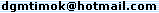

| Nome: | David G. Maziero (aka DGM) |
| Idade: | 33 anos |
| ICQ#: | 100882805 |
| MSN: |  |
| E-mail: | |
Entre em contato se você tem alguma opinião, crítica ou elogio sobre os jogos e programas DGM Soft,
ou se encontrou algum link quebrado nesta página.
Desenvolvo trabalhos como free-lance:
Sistemas para comércio ou empresa;
Jogos promocionais ou apresentações multimídia;
Páginas pessoais ou empresariais